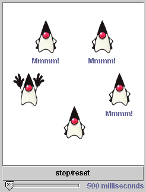

Feedback Form
| Start of Tutorial > Start of Trail > Start of Lesson | Search Feedback Form |
The dining philosophers are often used to illustrate various problems that can occur when many synchronized threads are competing for limited resources.The story goes like this: Five philosophers are sitting at a round table. In front of each philosopher is a bowl of rice. Between each pair of philosophers is one chopstick. Before an individual philosopher can take a bite of rice he must have two chopsticks--one taken from the left, and one taken from the right. The philosophers must find some way to share chopsticks such that they all get to eat.
The following applet does a rough animation using an image of Duke for the dining philosophers. This particular algorithm works as follows: Duke always reaches for the chopstick on his right first. If the chopstick is there, Duke takes it and raises his right hand. Next, Duke tries for the left chopstick. If the chopstick is available, Duke picks it up and raises his other hand. Now that Duke has both chopsticks, he takes a bite of rice and says "Mmm!" He then puts both chopsticks down, allowing either of his two neighbors to get the chopsticks. Duke then starts all over again by trying for the right chopstick. Between each attempt to grab a chopstick, each Duke pauses for a random period of time.

This is a picture of the applet's GUI. To run the applet, click the picture. The applet will appear in a new browser window.The slider controls the amount of time that each philosopher will wait before attempting to pick up a chopstick. When the slider is set to 0, the philosophers don't wait--they just grab--and most often, the applet ends up in deadlock: all the philosophers are frozen with their right hand in the air. Why? Because each philosopher immediately has one chopstick and is waiting on a condition that cannot be satisfied--they are all waiting for the left chopstick, which is held by the philosopher to their left.
When you move the slider so that the waiting period is longer, the applet may proceed for a while without deadlocking. However, deadlock is always possible with this particular implementation of the dining philosophers problem because it is possible for all five philosophers to be holding their right chopsticks. Rather than rely on luck to prevent deadlock, you must either prevent it or detect it.
For most Java programmers, the best choice is to prevent deadlock rather than to try and detect it. Deadlock detection is complicated and beyond the scope of this tutorial. The simplest approach to preventing deadlock is to impose ordering on the condition variables. In the dining philosopher applet, there is no ordering imposed on the condition variables because the philosophers and the chopsticks are arranged in a circle. All chopsticks are equal.
However, we can change the rules in the applet by numbering the chopsticks 1 through 5 and insisting that the philosophers pick up the chopstick with the lower number first. The philosopher who is sitting between chopsticks 1 and 2 and the philosopher who is sitting between chopsticks 1 and 5 must now reach for the same chopstick first (chopstick 1) rather than picking up the one on the right. Whoever gets chopstick 1 first is now free to take another one. Whoever doesn't get chopstick 1 must now wait for the first philosopher to release it. Deadlock is not possible.
| Start of Tutorial > Start of Trail > Start of Lesson | Search Feedback Form |